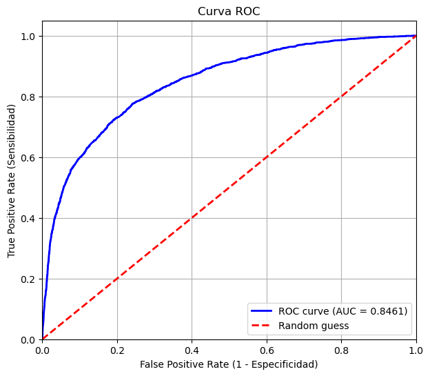
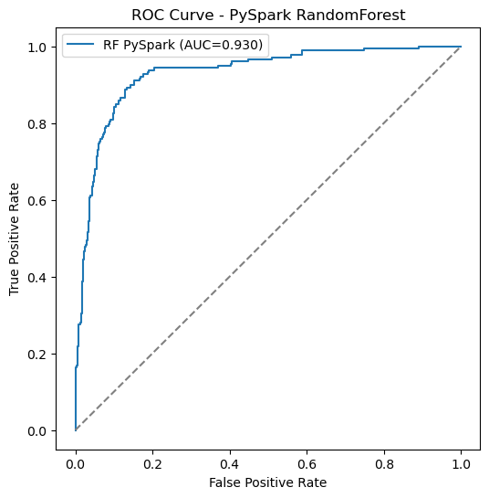
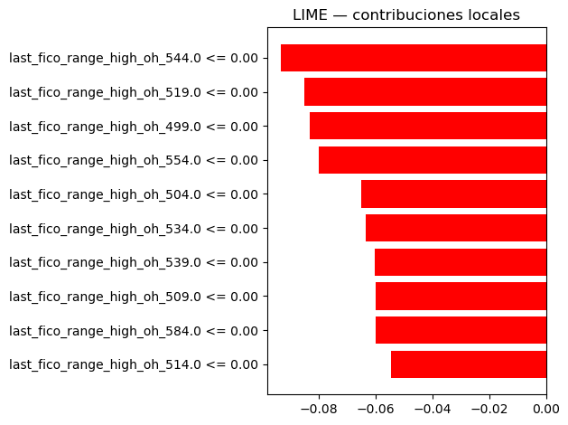
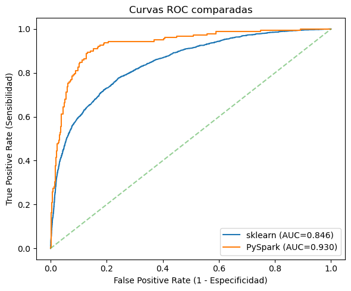

Modelado#
Librerias#
from pyspark.sql import SparkSession
from pyspark.sql.functions import col, when, sum
from pyspark.sql import types as T
from pyspark.sql import functions as F
from sklearn.model_selection import train_test_split
Iniciamos la Sesión Spark#
sparks = (SparkSession.builder
.appName("Pyspark session")
.getOrCreate())
Creamos una sesión de spark para trabajar con los dataframes y utilizar todas las funciones de Pyspark
Lectura de Datos#
df = sparks.read.csv("accepted_2007_to_2018Q4.csv", header=True, inferSchema=True)
Cargamos los datos como un dataframe de Spark
Creacion Variable default#
df = df.filter((col("loan_status") == "Fully Paid") |
(col("loan_status") == "Charged Off"))
Filtramos los valores de Fully Paid y Charged Off de la variable loan_status
df = df.withColumn(
"default",
when(col("loan_status") == "Charged Off", 1).otherwise(0)
)
Definimos los valores Charged off = 1 y Fully Paid = 0 para la variable nueva default
Limpieza de Nombres y Eliminacion de Variables#
traductor = {
"id": "id",
"member_id": "id_miembro",
"loan_amnt": "monto_prestamo",
"funded_amnt": "monto_aprobado",
"funded_amnt_inv": "monto_inversionistas",
"term": "plazo",
"int_rate": "tasa_interes",
"installment": "cuota_mensual",
"grade": "calificacion",
"sub_grade": "sub_calificacion",
"emp_title": "titulo_empleo",
"emp_length": "antiguedad_empleo",
"home_ownership": "tenencia_vivienda",
"annual_inc": "ingreso_anual",
"verification_status": "estado_verificacion",
"issue_d": "fecha_emision",
"loan_status": "estado_prestamo",
"pymnt_plan": "plan_pago",
"url": "url",
"desc": "descripcion",
"purpose": "proposito",
"title": "titulo_prestamo",
"zip_code": "codigo_postal",
"addr_state": "estado_residencia",
"dti": "ratio_deuda_ingreso",
"delinq_2yrs": "morosidad_2_anios",
"earliest_cr_line": "primer_linea_credito",
"inq_last_6mths": "consultas_ultimos6m",
"mths_since_last_delinq": "meses_ultimo_incumplimiento",
"mths_since_last_record": "meses_ultimo_registro",
"open_acc": "cuentas_abiertas",
"pub_rec": "registros_publicos",
"revol_bal": "saldo_revolvente",
"revol_util": "utilizacion_revolvente",
"total_acc": "total_cuentas",
"initial_list_status": "estado_inicial_lista",
"out_prncp": "capital_pendiente",
"out_prncp_inv": "capital_pendiente_inversionistas",
"total_pymnt": "pago_total",
"total_pymnt_inv": "pago_total_inversionistas",
"total_rec_prncp": "capital_pagado",
"total_rec_int": "intereses_pagados",
"total_rec_late_fee": "mora_pagada",
"recoveries": "recuperaciones",
"collection_recovery_fee": "gastos_recuperacion",
"last_pymnt_d": "fecha_ultimo_pago",
"last_pymnt_amnt": "monto_ultimo_pago",
"next_pymnt_d": "fecha_proximo_pago",
"last_credit_pull_d": "fecha_ultima_consulta_credito",
"collections_12_mths_ex_med": "cobranzas_12m_excl_med",
"mths_since_last_major_derog": "meses_ultimo_informe_negativo",
"policy_code": "codigo_politica",
"application_type": "tipo_aplicacion",
"annual_inc_joint": "ingreso_anual_conjunto",
"dti_joint": "ratio_deuda_ingreso_conjunto",
"verification_status_joint": "estado_verificacion_conjunto",
"acc_now_delinq": "cuentas_en_morosidad",
"tot_coll_amt": "monto_total_cobranzas",
"tot_cur_bal": "saldo_total_actual",
"open_acc_6m": "cuentas_abiertas_6m",
"open_il_6m": "cuentas_instalacion_6m",
"open_il_12m": "cuentas_instalacion_12m",
"open_il_24m": "cuentas_instalacion_24m",
"mths_since_rcnt_il": "meses_ultima_cuenta_instalacion",
"total_bal_il": "saldo_total_instalacion",
"il_util": "utilizacion_instalacion",
"open_rv_12m": "cuentas_revolving_12m",
"open_rv_24m": "cuentas_revolving_24m",
"max_bal_bc": "saldo_max_tarjeta",
"all_util": "utilizacion_total",
"total_rev_hi_lim": "limite_total_revolving",
"inq_fi": "consultas_financieras",
"total_cu_tl": "total_lineas_credito",
"inq_last_12m": "consultas_12m",
"acc_open_past_24mths": "cuentas_abiertas_24m",
"avg_cur_bal": "saldo_promedio_actual",
"bc_open_to_buy": "credito_disponible_bc",
"bc_util": "utilizacion_tarjetas_bc",
"chargeoff_within_12_mths": "castigos_12m",
"delinq_amnt": "monto_morosidad",
"mo_sin_old_il_acct": "meses_cuenta_instalacion_mas_antigua",
"mo_sin_old_rev_tl_op": "meses_cuenta_revolving_mas_antigua",
"mo_sin_rcnt_rev_tl_op": "meses_ultima_cuenta_revolving",
"mo_sin_rcnt_tl": "meses_ultima_linea_credito",
"mort_acc": "cuentas_hipotecarias",
"mths_since_recent_bc": "meses_ultima_tarjeta_bc",
"mths_since_recent_bc_dlq": "meses_mora_tarjeta_bc",
"mths_since_recent_inq": "meses_ultima_consulta",
"mths_since_recent_revol_delinq": "meses_mora_revolving",
"num_accts_ever_120_pd": "cuentas_mas_120_dias",
"num_actv_bc_tl": "cuentas_bc_activas",
"num_actv_rev_tl": "cuentas_revolving_activas",
"num_bc_sats": "cuentas_bc_satisfechas",
"num_bc_tl": "cuentas_bc_totales",
"num_il_tl": "cuentas_instalacion_totales",
"num_op_rev_tl": "cuentas_revolving_abiertas",
"num_rev_accts": "cuentas_revolving",
"num_rev_tl_bal_gt_0": "cuentas_revolving_saldo_gt_0",
"num_sats": "cuentas_satisfechas",
"num_tl_120dpd_2m": "cuentas_120_dias_2m",
"num_tl_30dpd": "cuentas_30_dias",
"num_tl_90g_dpd_24m": "cuentas_90_dias_24m",
"num_tl_op_past_12m": "cuentas_abiertas_12m",
"pct_tl_nvr_dlq": "pct_lineas_nunca_mora",
"percent_bc_gt_75": "pct_bc_utilizacion_gt_75",
"pub_rec_bankruptcies": "bancarrotas_publicas",
"tax_liens": "gravamenes_impuestos",
"tot_hi_cred_lim": "limite_total_credito_alto",
"total_bal_ex_mort": "saldo_total_ex_mortgage",
"total_bc_limit": "limite_total_bc",
"total_il_high_credit_limit": "limite_total_instalacion_alto",
"revol_bal_joint": "saldo_revolving_conjunto",
"sec_app_fico_range_low": "fico_bajo_codeudor",
"sec_app_fico_range_high": "fico_alto_codeudor",
"sec_app_earliest_cr_line": "primer_credito_codeudor",
"sec_app_inq_last_6mths": "consultas_6m_codeudor",
"sec_app_mort_acc": "cuentas_hipoteca_codeudor",
"sec_app_open_acc": "cuentas_abiertas_codeudor",
"sec_app_revol_util": "utilizacion_revolving_codeudor",
"sec_app_open_il_6m": "instalacion_6m_codeudor",
"sec_app_num_rev_accts": "num_revolving_codeudor",
"sec_app_chargeoff_within_12_mths": "castigos_12m_codeudor",
"sec_app_collections_12_mths_ex_med": "cobranzas_12m_excl_med_codeudor",
"sec_app_mths_since_last_major_derog": "meses_incumplimiento_codeudor",
"hardship_flag": "bandera_dificultad",
"hardship_type": "tipo_dificultad",
"hardship_reason": "razon_dificultad",
"hardship_status": "estado_dificultad",
"deferral_term": "plazo_prorroga",
"hardship_amount": "monto_dificultad",
"hardship_start_date": "fecha_inicio_dificultad",
"hardship_end_date": "fecha_fin_dificultad",
"payment_plan_start_date": "fecha_inicio_plan_pago",
"hardship_length": "duracion_dificultad",
"hardship_dpd": "dias_mora_dificultad",
"hardship_loan_status": "estado_prestamo_dificultad",
"orig_projected_additional_accrued_interest": "interes_proyectado_adicional",
"hardship_payoff_balance_amount": "monto_saldo_pago_dificultad",
"hardship_last_payment_amount": "monto_ultimo_pago_dificultad",
"disbursement_method": "metodo_desembolso",
"debt_settlement_flag": "bandera_acuerdo_deuda",
"debt_settlement_flag_date": "fecha_bandera_acuerdo_deuda",
"settlement_status": "estado_acuerdo",
"settlement_date": "fecha_acuerdo",
"settlement_amount": "monto_acuerdo",
"settlement_percentage": "porcentaje_acuerdo",
"settlement_term": "plazo_acuerdo",
"default": "incumplimiento"
}
for col_old, col_new in traductor.items():
if col_old in df.columns:
df = df.withColumnRenamed(col_old, col_new)
Hacemos el cambio de las variables a español
registros = df.count()
variables = len(df.columns)
missing_df = df.select([
sum(col(c).isNull().cast("int")).alias(c) for c in df.columns
])
missing_pd = missing_df.toPandas().T
missing_pd.columns = ["nulos"]
missing_pd["%_faltantes"] = (missing_pd["nulos"] / registros) * 100
missing_pd = missing_pd.sort_values("%_faltantes", ascending=False)
v_elim = missing_pd[missing_pd["%_faltantes"] > 40].index.tolist()
df = df.drop(*v_elim)
v_elim2 = ["id","monto_aprobado","estado_prestamo","monto_inversionistas", "titulo_empleo", "url", "titulo_prestamo", "pago_total",
"pago_total_inversionistas", "capital_pagado", "intereses_pagados", "mora_pagada", "recuperaciones", "gastos_recuperacion",
"fecha_ultimo_pago", "fecha_ultima_consulta_credito", "bandera_acuerdo_deuda", "capital_pendiente_inversionistas","calificacion",
"monto_ultimo_pago", "codigo_politica"]
df = df.drop(*v_elim2)
Asignamos algunas variables para utilizarlas mas adelante en el modelo y eliminamos variables que no utilizaremos y encontramos irrelevantes
Partición de Datos de scikit y Pyspark antes de imputación para evitar Data Leakage#
Seleccionamos las variables relevantes para el estudio#
features = [
"monto_prestamo",
"tasa_interes",
"cuota_mensual",
"ingreso_anual",
"antiguedad_empleo",
"proposito",
"plazo",
"tenencia_vivienda",
"estado_verificacion",
"sub_calificacion",
"estado_residencia",
"cuentas_abiertas_12m",
"pct_lineas_nunca_mora",
"ratio_deuda_ingreso",
"last_fico_range_high"
]
target = "incumplimiento"
Escogemos las variables de interés para modelar y las separamos en features que son las variables predictoras y target que es la variable a predecir
Definimos el dataset con las variables a trabajar#
df = df.select(features + [target])
df = df.withColumn("incumplimiento", df["incumplimiento"].cast(T.DoubleType ()))
Creamos el Dataset solo con estas variables que utilizaremos para el proyecto
Separamos las variables predictoras y la objetivo#
X = df[features]
y = df[target]
Separamos en vectores X las variables predictoras y y la predictora
Tomamos una muestra y transformamos a pandas para trabajar scikit#
sample_X = X.sample(False, 0.05, seed=42).toPandas()
sample_y = df.sample(False, 0.05, seed=42).select(target).toPandas()
Debido a la cantidad de los datos, por motivos de RAM y almacenamiento hay que utilizar una muestra para modelar en Scikit
Split scikit#
X_train, X_test, y_train, y_test = train_test_split(
sample_X, sample_y, test_size=0.2, random_state=42, stratify=sample_y
)
Split Pyspark#
train_df, test_df = df.randomSplit([0.8, 0.2], seed=42)
Realizamos el Split en ambos modelos
Scikit.learn#
Librerias Necesarias#
import time
import pandas as pd
import numpy as np
import matplotlib.pyplot as plt
from sklearn.datasets import make_classification
from sklearn.model_selection import train_test_split, GridSearchCV
from sklearn.svm import SVC
from sklearn.metrics import roc_auc_score, accuracy_score, precision_score, recall_score, f1_score, classification_report, confusion_matrix, roc_curve, auc
from sklearn.ensemble import RandomForestClassifier
from sklearn.preprocessing import OneHotEncoder, StandardScaler, OrdinalEncoder
from sklearn.compose import ColumnTransformer
from sklearn.pipeline import Pipeline
from sklearn.impute import SimpleImputer
Estas son las librerias que se utilizaran solo en el modelo de Scikit-Learn
Visualizamos las variables que aún tiene valores faltantes y estan presentes en el dataset#
missing_pd = missing_df.toPandas().T
missing_pd.columns = ["nulos"]
missing_pd["%_faltantes"] = (missing_pd["nulos"] / registros) * 100
missing_pd = missing_pd.sort_values("%_faltantes", ascending=False)
missing_pd.head(60)
| nulos | %_faltantes | |
|---|---|---|
| id_miembro | 1345309 | 100.000000 |
| fecha_proximo_pago | 1345086 | 99.983424 |
| interes_proyectado_adicional | 1341548 | 99.720436 |
| monto_saldo_pago_dificultad | 1339554 | 99.572217 |
| monto_ultimo_pago_dificultad | 1339554 | 99.572217 |
| dias_mora_dificultad | 1339550 | 99.571920 |
| estado_prestamo_dificultad | 1339548 | 99.571771 |
| fecha_inicio_dificultad | 1339547 | 99.571697 |
| fecha_fin_dificultad | 1339546 | 99.571623 |
| duracion_dificultad | 1339545 | 99.571548 |
| fecha_inicio_plan_pago | 1339543 | 99.571400 |
| monto_dificultad | 1339540 | 99.571177 |
| plazo_prorroga | 1339532 | 99.570582 |
| estado_dificultad | 1339521 | 99.569764 |
| razon_dificultad | 1339513 | 99.569170 |
| tipo_dificultad | 1339504 | 99.568501 |
| meses_incumplimiento_codeudor | 1338662 | 99.505913 |
| utilizacion_revolving_codeudor | 1327004 | 98.639346 |
| num_revolving_codeudor | 1326678 | 98.615114 |
| sec_app_open_act_il | 1326677 | 98.615039 |
| castigos_12m_codeudor | 1326673 | 98.614742 |
| cobranzas_12m_excl_med_codeudor | 1326672 | 98.614668 |
| cuentas_abiertas_codeudor | 1326670 | 98.614519 |
| cuentas_hipoteca_codeudor | 1326668 | 98.614370 |
| consultas_6m_codeudor | 1326665 | 98.614147 |
| fico_bajo_codeudor | 1326662 | 98.613924 |
| saldo_revolving_conjunto | 1326658 | 98.613627 |
| fico_alto_codeudor | 1326657 | 98.613553 |
| primer_credito_codeudor | 1326657 | 98.613553 |
| estado_verificacion_conjunto | 1319597 | 98.088766 |
| ratio_deuda_ingreso_conjunto | 1319367 | 98.071670 |
| ingreso_anual_conjunto | 1319330 | 98.068919 |
| plazo_acuerdo | 1312016 | 97.525253 |
| porcentaje_acuerdo | 1312012 | 97.524955 |
| monto_acuerdo | 1311998 | 97.523915 |
| fecha_acuerdo | 1311977 | 97.522354 |
| estado_acuerdo | 1311957 | 97.520867 |
| fecha_bandera_acuerdo_deuda | 1311942 | 97.519752 |
| descripcion | 1221777 | 90.817574 |
| meses_ultimo_registro | 1116581 | 82.998107 |
| meses_mora_tarjeta_bc | 1026267 | 76.284854 |
| meses_ultimo_informe_negativo | 991349 | 73.689316 |
| meses_mora_revolving | 895331 | 66.552071 |
| utilizacion_instalacion | 880270 | 65.432551 |
| meses_ultima_cuenta_instalacion | 821897 | 61.093548 |
| utilizacion_total | 807758 | 60.042563 |
| consultas_12m | 807711 | 60.039069 |
| consultas_financieras | 807707 | 60.038772 |
| total_lineas_credito | 807703 | 60.038474 |
| saldo_max_tarjeta | 807700 | 60.038251 |
| cuentas_revolving_12m | 807699 | 60.038177 |
| cuentas_revolving_24m | 807693 | 60.037731 |
| saldo_total_instalacion | 807685 | 60.037136 |
| cuentas_instalacion_24m | 807678 | 60.036616 |
| cuentas_instalacion_12m | 807673 | 60.036244 |
| open_act_il | 807645 | 60.034163 |
| cuentas_abiertas_6m | 807631 | 60.033123 |
| meses_ultimo_incumplimiento | 678599 | 50.441869 |
| meses_ultima_consulta | 174049 | 12.937474 |
| cuentas_120_dias_2m | 117400 | 8.726620 |
Revisamos nuevamente las variables con valores faltantes para decidir como imputar
Seleccionamos las variables con mas de 5% de valores faltantes para realizar la imputación#
NUMERIC_TYPES = (T.ByteType, T.ShortType, T.IntegerType, T.LongType,
T.FloatType, T.DoubleType, T.DecimalType)
def get_numeric_cols(df):
return [f.name for f in df.schema.fields if isinstance(f.dataType, NUMERIC_TYPES)]
def get_categorical_cols(df, ignore=None):
ignore = set(ignore or [])
cat_cols = []
for field in df.schema.fields: # aquí recorres StructField, no strings
if field.name not in ignore and isinstance(field.dataType, (T.StringType, T.BooleanType)):
cat_cols.append(field.name)
return cat_cols
def jarque_bera(n, skew, kurt):
# JB = n/6*(skew^2 + (kurt-3)^2/4)
if n is None or n == 0 or skew is None or kurt is None:
return None
return (n/6.0) * (skew**2 + ((kurt - 3.0)**2)/4.0)
# --- imputación principal ---
def impute_spark(df, cat_strategy="mode", verbose=True):
"""
Imputa:
- Numéricas: media si JB < 5.99 (≈normal), si no mediana (approxQuantile)
- Categóricas: moda
Devuelve df_imputado y un dict con el valor usado por columna.
"""
fill_map = {}
# ===== NUMÉRICAS =====
num_cols = get_numeric_cols(df)
for col in num_cols:
# conteo no nulo + momentos
stats = df.select(
F.count(F.col(col)).alias("n_valid"),
F.mean(F.col(col)).alias("mean"),
F.skewness(F.col(col)).alias("skew"),
F.kurtosis(F.col(col)).alias("kurt")
).first()
n_valid = stats["n_valid"]
if n_valid == 0:
if verbose: print(f"[{col}] solo NA, se omite imputación.")
continue
mean = stats["mean"]
skew = stats["skew"]
kurt = stats["kurt"]
JB = jarque_bera(n_valid, skew, kurt)
# Umbral χ²(2) 0.95 ≈ 5.99 → JB < 5.99 ⇒ no rechazamos normalidad
is_normal = (JB is not None) and (JB < 5.99)
if is_normal and mean is not None:
value = float(mean)
metodo = "media (JB < 5.99)"
else:
# mediana robusta con approxQuantile
value = df.approxQuantile(col, [0.5], 0.001)[0]
metodo = "mediana (JB ≥ 5.99 o momentos no disponibles)"
fill_map[col] = value
if verbose:
print(f"[{col}] imputará con {metodo}; N={n_valid}; valor={value}")
# ===== CATEGÓRICAS =====
cat_cols = get_categorical_cols(df, ignore=num_cols)
for col in cat_cols:
if cat_strategy == "mode":
# moda: valor más frecuente (ignorando NULL)
row = (df.where(F.col(col).isNotNull())
.groupBy(col).count()
.orderBy(F.desc("count"))
.limit(1)
.collect())
if row:
value = row[0][0]
fill_map[col] = value
if verbose:
print(f"[{col}] imputará con moda: {value}")
else:
if verbose:
print(f"[{col}] todos NA, se omite imputación.")
else:
raise ValueError("cat_strategy no soportada. Usa 'mode'.")
# Aplicar imputación en un solo paso
df_imputed = df.fillna(fill_map)
return df_imputed, fill_map
Realizamos imputaciones#
df_imputed, fill_values = impute_spark(df, cat_strategy="mode", verbose=True)
df_imputed.show()
[monto_prestamo] imputará con mediana (JB ≥ 5.99 o momentos no disponibles); N=1345309; valor=12000.0
[tasa_interes] imputará con mediana (JB ≥ 5.99 o momentos no disponibles); N=1345309; valor=12.74
[cuota_mensual] imputará con mediana (JB ≥ 5.99 o momentos no disponibles); N=1345309; valor=375.33
[cuentas_abiertas_12m] imputará con mediana (JB ≥ 5.99 o momentos no disponibles); N=1277784; valor=2.0
[pct_lineas_nunca_mora] imputará con mediana (JB ≥ 5.99 o momentos no disponibles); N=1277628; valor=98.0
[incumplimiento] imputará con mediana (JB ≥ 5.99 o momentos no disponibles); N=1345309; valor=0.0
[ingreso_anual] imputará con moda: 60000.0
[antiguedad_empleo] imputará con moda: 10+ years
[proposito] imputará con moda: debt_consolidation
[plazo] imputará con moda: 36 months
[tenencia_vivienda] imputará con moda: MORTGAGE
[estado_verificacion] imputará con moda: Source Verified
[sub_calificacion] imputará con moda: C1
[estado_residencia] imputará con moda: CA
[ratio_deuda_ingreso] imputará con moda: 18.0
[last_fico_range_high] imputará con moda: 694.0
+--------------+------------+-------------+-------------+-----------------+------------------+----------+-----------------+-------------------+----------------+-----------------+--------------------+---------------------+-------------------+--------------------+--------------+
|monto_prestamo|tasa_interes|cuota_mensual|ingreso_anual|antiguedad_empleo| proposito| plazo|tenencia_vivienda|estado_verificacion|sub_calificacion|estado_residencia|cuentas_abiertas_12m|pct_lineas_nunca_mora|ratio_deuda_ingreso|last_fico_range_high|incumplimiento|
+--------------+------------+-------------+-------------+-----------------+------------------+----------+-----------------+-------------------+----------------+-----------------+--------------------+---------------------+-------------------+--------------------+--------------+
| 3600.0| 13.99| 123.03| 55000.0| 10+ years|debt_consolidation| 36 months| MORTGAGE| Not Verified| C4| PA| 3.0| 76.9| 5.91| 564.0| 0.0|
| 24700.0| 11.99| 820.28| 65000.0| 10+ years| small_business| 36 months| MORTGAGE| Not Verified| C1| SD| 2.0| 97.4| 16.06| 699.0| 0.0|
| 20000.0| 10.78| 432.66| 63000.0| 10+ years| home_improvement| 60 months| MORTGAGE| Not Verified| B4| IL| 0.0| 100.0| 10.78| 704.0| 0.0|
| 10400.0| 22.45| 289.91| 104433.0| 3 years| major_purchase| 60 months| MORTGAGE| Source Verified| F1| PA| 4.0| 96.6| 25.37| 704.0| 0.0|
| 11950.0| 13.44| 405.18| 34000.0| 4 years|debt_consolidation| 36 months| RENT| Source Verified| C3| GA| 0.0| 100.0| 10.2| 759.0| 0.0|
| 20000.0| 9.17| 637.58| 180000.0| 10+ years|debt_consolidation| 36 months| MORTGAGE| Not Verified| B2| MN| 2.0| 96.3| 14.67| 654.0| 0.0|
| 20000.0| 8.49| 631.26| 85000.0| 10+ years| major_purchase| 36 months| MORTGAGE| Not Verified| B1| SC| 0.0| 93.3| 17.61| 674.0| 0.0|
| 10000.0| 6.49| 306.45| 85000.0| 6 years| credit_card| 36 months| RENT| Not Verified| A2| PA| 2.0| 95.7| 13.07| 719.0| 0.0|
| 8000.0| 11.48| 263.74| 42000.0| 10+ years| credit_card| 36 months| MORTGAGE| Not Verified| B5| RI| 2.0| 94.4| 34.8| 679.0| 0.0|
| 1400.0| 12.88| 47.1| 64000.0| 3 years| other| 36 months| MORTGAGE| Not Verified| C2| NC| 1.0| 100.0| 34.95| 704.0| 0.0|
| 18000.0| 19.48| 471.7| 150000.0| 7 years|debt_consolidation| 60 months| RENT| Not Verified| E2| CA| 3.0| 100.0| 9.39| 584.0| 1.0|
| 28000.0| 6.49| 858.05| 92000.0| 10+ years|debt_consolidation| 36 months| MORTGAGE| Not Verified| A2| NC| 0.0| 91.7| 21.6| 764.0| 0.0|
| 9600.0| 7.49| 298.58| 60000.0| 8 years| credit_card| 36 months| MORTGAGE| Not Verified| A4| SC| 2.0| 100.0| 22.44| 779.0| 0.0|
| 25000.0| 7.49| 777.55| 109000.0| 10+ years|debt_consolidation| 36 months| MORTGAGE| Not Verified| A4| VA| 0.0| 100.0| 26.02| 724.0| 0.0|
| 18000.0| 11.99| 400.31| 112000.0| 10+ years|debt_consolidation| 60 months| MORTGAGE| Not Verified| C1| AZ| 4.0| 100.0| 8.68| 794.0| 0.0|
| 8650.0| 19.89| 320.99| 55000.0| 8 years|debt_consolidation| 36 months| RENT| Verified| E3| IN| 12.0| 100.0| 25.49| 639.0| 0.0|
| 29900.0| 12.88| 678.49| 65000.0| 10+ years|debt_consolidation| 60 months| MORTGAGE| Verified| C2| MD| 4.0| 100.0| 21.77| 719.0| 0.0|
| 16000.0| 14.85| 379.39| 48000.0| 10+ years| credit_card| 60 months| MORTGAGE| Not Verified| C5| SC| 2.0| 78.9| 33.18| 664.0| 0.0|
| 28000.0| 13.44| 949.38| 125000.0| 2 years|debt_consolidation| 36 months| OWN| Source Verified| C3| NY| 0.0| 100.0| 7.49| 744.0| 0.0|
| 5000.0| 13.44| 169.54| 79000.0| 2 years| credit_card| 36 months| RENT| Verified| C3| MD| 0.0| 100.0| 12.7| 659.0| 0.0|
+--------------+------------+-------------+-------------+-----------------+------------------+----------+-----------------+-------------------+----------------+-----------------+--------------------+---------------------+-------------------+--------------------+--------------+
only showing top 20 rows
Realizamos la imputacion de las variables aún con valores faltantes
Comprobamos las imputaciones#
df_imputed.printSchema()
root
|-- monto_prestamo: double (nullable = false)
|-- tasa_interes: double (nullable = false)
|-- cuota_mensual: double (nullable = false)
|-- ingreso_anual: string (nullable = false)
|-- antiguedad_empleo: string (nullable = false)
|-- proposito: string (nullable = false)
|-- plazo: string (nullable = false)
|-- tenencia_vivienda: string (nullable = false)
|-- estado_verificacion: string (nullable = false)
|-- sub_calificacion: string (nullable = false)
|-- estado_residencia: string (nullable = false)
|-- cuentas_abiertas_12m: double (nullable = false)
|-- pct_lineas_nunca_mora: double (nullable = false)
|-- ratio_deuda_ingreso: string (nullable = false)
|-- last_fico_range_high: string (nullable = false)
|-- incumplimiento: double (nullable = false)
Hacemos la verificación de las imputaciones
Definimos nuevamente el dataset#
df = df_imputed
Cambiamos el Dataset listo para modelar con las variables relevantes
Verificamos que esten todas las columnas para evitar errores en el preprocesamiento#
missing = [c for c in features + [target] if c not in df.columns]
if missing:
print(f"Faltan columnas en df: {missing}")
Separamos las variables numericas y categoricas predictoras#
xv_num = [c for c, t in X.dtypes if t in ("int", "double", "float")]
xv_cat = [i for i, t in X.dtypes if t == "string"]
Definimos xv_num como las variables numéricas y xv_cat como las variables categoricas, ambas de las variables predictoras
Pipeline Preprocesamiento#
num_pipeline = Pipeline([
("imp", SimpleImputer(strategy="median")),
("sc", StandardScaler(with_mean=False))
])
cat_pipeline = Pipeline([
("imp", SimpleImputer(strategy="most_frequent")),
("ohe", OneHotEncoder(handle_unknown="ignore", sparse_output=True))
])
prep = ColumnTransformer(transformers=[
("num", num_pipeline, xv_num),
("cat", cat_pipeline, xv_cat)
],
sparse_threshold=1.0,
remainder="drop")
Creamos los Pipelines de preprocesamiento
t0 = time.time()
X_pre = prep.fit_transform(sample_X)
preproc_time = time.time() - t0
print(f"Preprocesamiento completado en {preproc_time:.2f}s")
print("X_pre shape:", X_pre.shape)
Preprocesamiento completado en 0.41s
X_pre shape: (67225, 11040)
Aplicamos el preprocesamiento a la muestra a modelar sample_X
RandomForest#
from sklearn.pipeline import Pipeline
from sklearn.model_selection import GridSearchCV
from sklearn.ensemble import RandomForestClassifier
rf = RandomForestClassifier(random_state=42, n_jobs=-1)
pipe = Pipeline([
("prep", prep),
("clf", rf)
])
param_grid = {
"clf__n_estimators": [10, 50, 100],
"clf__max_depth": [5, 10, 15]
}
grid = GridSearchCV(
pipe, param_grid,
cv=3, scoring="f1", n_jobs=-4, verbose=2
)
t0 = time.time()
grid.fit(sample_X, sample_y)
t_train = time.time() - t0
print(f"GridSearch entrenado en {t_train:.2f}s")
print("Mejores params:", grid.best_params_, "Mejor score (f1):", grid.best_score_)
Fitting 3 folds for each of 9 candidates, totalling 27 fits
GridSearch entrenado en 14.43s
Mejores params: {'clf__max_depth': 15, 'clf__n_estimators': 10} Mejor score (f1): 0.001476003882325204
c:\Users\mming\miniconda3\envs\data_viz_k\Lib\site-packages\sklearn\base.py:1365: DataConversionWarning: A column-vector y was passed when a 1d array was expected. Please change the shape of y to (n_samples,), for example using ravel().
return fit_method(estimator, *args, **kwargs)
Definimos el modelo RandomForest y aplicamos el modelo con los pipelines dentro de cada paso del modelo
Entrenamiento de todo Train y Test#
b_params = grid.best_params_
rf_params = {k.split("__", 1)[1]: v
for k, v in grid.best_params_.items()
if k.startswith("clf__")}
b_rf = RandomForestClassifier(
**rf_params,
random_state=42,
n_jobs=4
)
b_pipe = Pipeline([
("prep", prep),
("clf", b_rf)
])
t0 = time.time()
b_pipe.fit(X_train, y_train)
t_sci = time.time() - t0
print(f"El tiempo del entrenamiento en todo el train fue {t_sci:.2f}s")
t0 = time.time()
pred_y = b_pipe.predict(X_test)
pred_time = time.time() - t0
pro_y = b_pipe.predict_proba(X_test)[:, 1]
tt_sci = pred_time + t_sci + preproc_time + t_train
c:\Users\mming\miniconda3\envs\data_viz_k\Lib\site-packages\sklearn\base.py:1365: DataConversionWarning: A column-vector y was passed when a 1d array was expected. Please change the shape of y to (n_samples,), for example using ravel().
return fit_method(estimator, *args, **kwargs)
El tiempo del entrenamiento en todo el train fue 0.46s
Utilizamos los mejores parámetros que nos dio el modelo RandomForest de la celda anterior
Resultados#
metricas = {
"accuracy": accuracy_score(y_test, pred_y),
"precision": precision_score(y_test, pred_y, zero_division=0),
"recall": recall_score(y_test, pred_y, zero_division=0),
"f1": f1_score(y_test, pred_y, zero_division=0),
"roc_auc": roc_auc_score(y_test, pro_y),
"grid_time_s": t_train,
"train_time_s": t_sci,
"pred_time_s": pred_time,
"Tiempo total del modelo": tt_sci
}
print("\nResultados sklearn:")
for k,v in metricas.items():
print(f"{k}: {v:.4f}")
print("\nConfusion matrix:\n", confusion_matrix(y_test, pred_y))
print("\nReporte de clasificación:\n", classification_report(y_test, pred_y, zero_division=0))
Resultados sklearn:
accuracy: 0.7990
precision: 1.0000
recall: 0.0022
f1: 0.0044
roc_auc: 0.8461
grid_time_s: 14.4336
train_time_s: 0.4557
pred_time_s: 0.0803
Tiempo total del modelo: 15.3788
Confusion matrix:
[[10737 0]
[ 2702 6]]
Reporte de clasificación:
precision recall f1-score support
0.0 0.80 1.00 0.89 10737
1.0 1.00 0.00 0.00 2708
accuracy 0.80 13445
macro avg 0.90 0.50 0.45 13445
weighted avg 0.84 0.80 0.71 13445
Curva ROC#
sc_fpr, sc_tpr, thresholds = roc_curve(y_test, pro_y)
roc_auc_sc = auc(sc_fpr, sc_tpr)
plt.figure(figsize=(7,6))
plt.plot(sc_fpr, sc_tpr, color="blue", lw=2, label=f"ROC curve (AUC = {roc_auc_sc:.4f})")
plt.plot([0,1], [0,1], color="red", lw=2, linestyle="--", label="Random guess")
plt.xlim([0.0, 1.0])
plt.ylim([0.0, 1.05])
plt.xlabel("False Positive Rate (1 - Especificidad)")
plt.ylabel("True Positive Rate (Sensibilidad)")
plt.title("Curva ROC")
plt.legend(loc="lower right")
plt.grid(True)
plt.show()

Resultados del modelo (scikit-learn)#
Métricas globales#
Accuracy: 0.799
Precision (global): 1.000
Recall (global): 0.0022
F1-score (global): 0.0044
ROC AUC: 0.8461
Lectura: El modelo clasifica correctamente ~80% de los casos (accuracy), pero casi no detecta la clase positiva (recall ~0%). A pesar de eso, la ROC AUC = 0.846 indica que el modelo sí separa bien ambas clases: el problema actual es el umbral de decisión (por defecto 0.5) o el desbalance de clases.
Lectura: Casi todo se predice como clase 0. De 2708 positivos reales, solo 6 fueron detectados (recall ~0%).
Reporte de clasificación (por clase)#
Clase 0 (no incumple)
Precisión: 0.80
Recall: 1.00
F1: 0.89
Clase 1 (incumple)
Precisión: 1.00
Recall: 0.00
F1: 0.00
Lectura: Cuando el modelo predice positivo, acierta (precisión = 1.00), pero casi nunca predice positivo (recall ≈ 0).
Curva ROC#
La curva está por encima de la diagonal (azar) y la AUC = 0.846 es alta → el modelo distingue entre clases.
Conclusión: No es un problema de separabilidad, sino de umbral y desbalance.
Modelo Pyspark#
Librerias Necesarias#
import pyspark
from pyspark.ml.linalg import DenseVector
from pyspark.sql import SparkSession
from pyspark.sql.types import DoubleType
from pyspark.ml.classification import RandomForestClassifier, RandomForestClassificationModel
from pyspark.ml.feature import VectorAssembler
from pyspark.ml.functions import vector_to_array
from pyspark.ml.tuning import ParamGridBuilder, CrossValidator
from pyspark.ml.evaluation import BinaryClassificationEvaluator, MulticlassClassificationEvaluator
from pyspark.sql import functions as F
from pyspark.sql import types as T
from pyspark.ml.feature import StringIndexer, OneHotEncoder, VectorAssembler, Imputer as SparkImputer
from pyspark.ml import Pipeline as SparkPipeline
from sklearn.metrics import roc_auc_score, accuracy_score, precision_score, recall_score, f1_score, classification_report, confusion_matrix, roc_curve, auc
Seleccionamos dataset#
Aunque ya se realizo la carga de los datos, seleccionaremos solo las que vamos a utilizar en spark
sdf = df.select(*(features + [target]))
NUM_TYPES = (T.ByteType, T.ShortType, T.IntegerType, T.LongType, T.FloatType, T.DoubleType, T.DecimalType)
xv_num = [f.name for f in sdf.schema.fields if f.name in features and isinstance(f.dataType, NUM_TYPES)]
xv_cat = [f.name for f in sdf.schema.fields if f.name in features and isinstance(f.dataType, (T.StringType, T.BooleanType))]
for c in xv_num:
sdf = sdf.withColumn(c, F.col(c).cast(T.DoubleType()))
Seleccionamos el dataset sdf con el que vamos a trabajar en PysPark, rectificamos que xv_num y xv_cat esten bien definidas y las numéricas se encuentren en DoubleType
StringIndexer y OneHotEncoder#
label_idx = StringIndexer(inputCol=target, outputCol="label", handleInvalid="keep")
imputer = SparkImputer(
inputCols=xv_num,
outputCols=[c + "_imp" for c in xv_num]
)
try:
imputer.setStrategy("median")
except Exception:
imputer.setStrategy("mean")
indexers = [StringIndexer(inputCol=c, outputCol=c+"_idx", handleInvalid="skip") for c in xv_cat]
encoders = [OneHotEncoder(inputCol=c+"_idx", outputCol=c+"_oh", dropLast=True) for c in xv_cat]
VectorAssembler#
assembler_inputs = [c + "_imp" for c in xv_num] + [c + "_oh" for c in xv_cat]
assembler = VectorAssembler(inputCols=assembler_inputs, outputCol="features", handleInvalid="skip")
Creamos StringIndexer, OneHotEncoder y el Vecto*Assembler para los SparkPipelines
Spark Pipelines#
spark_pipe = SparkPipeline(stages=[label_idx, imputer] + indexers + encoders + [assembler])
Definimos y aplicamos el SparkPipeline para utilizarlo en el dataset y en el modelo
Preprocesamiento#
t0 = time.time()
model_pipe = spark_pipe.fit(sdf)
sdf_pre = model_pipe.transform(sdf).select("features", F.col("label"))
t_spark_pre = time.time() - t0
print(f"Preprocesamiento Spark completado en {t_spark_pre:.2f}s")
Preprocesamiento Spark completado en 30.01s
Aplicamos el SparkPipeline al dataset y obtenemos el tiempo
Definimos Nuevamente el Dataset#
sdf = sdf_pre
Volvemos a redefinir el dataset ya preprocesado para el modelo
Muestra Pyspark#
target_size = 70000
fraction = min(1.0, target_size / train_df.count())
train_mu = train_df.sample(False, fraction, seed=42)
Sacamos también una muestra en Spark debido a que no podemos utilizar tamaños de datos tan grandes en el dispositivo
Modelado#
for c in xv_num:
train_df = train_df.withColumn(c, F.col(c).cast(T.DoubleType()))
test_df = test_df.withColumn(c, F.col(c).cast(T.DoubleType()))
Aseguramos que train_df y test_df este en DoubleType
# Parámetros del RandomForest
param_grid = {
"numTrees": [10, 50, 100],
"maxDepth": [5, 10, 15]
}
evaluator_ = BinaryClassificationEvaluator(
labelCol="label",
rawPredictionCol="rawPrediction",
metricName="areaUnderROC"
)
evaluator = MulticlassClassificationEvaluator(
labelCol="label",
predictionCol="prediction",
metricName="f1"
)
results = []
best_model = None
best_auc = -1
best_preds = None
Definimos el evaluator que vamos a utilizar en el modelo
RandomForest#
prep_stages = [label_idx , imputer] + indexers + encoders + [assembler]
for ntrees in param_grid["numTrees"]:
for depth in param_grid["maxDepth"]:
print(f"[INFO] Entrenando con numTrees={ntrees}, maxDepth={depth}")
# Definir el pipeline completo: preprocesamiento + modelo
pipe = SparkPipeline(stages=prep_stages + [
RandomForestClassifier(
featuresCol="features",
labelCol="label",
numTrees=ntrees,
maxDepth=depth,
seed=42
)
])
# Entrenamiento
t0 = time.time()
model_pipe = pipe.fit(train_mu)
train_time = time.time() - t0
# Predicciones
t0 = time.time()
preds = model_pipe.transform(test_df)
pred_time_s = time.time() - t0
# Evaluación
auc = evaluator.evaluate(preds) # BinaryClassificationEvaluator
print(f"AUC={auc:.4f}, train_time={train_time:.2f}s, pred_time={pred_time:.2f}s")
# Guardar resultados
results.append((ntrees, depth, auc, train_time, pred_time))
if auc > best_auc:
best_auc = auc
best_model = model_pipe
best_preds = preds
print("Mejor modelo encontrado:")
print(best_model)
print(f"AUC ROC = {best_auc:.4f}")
[INFO] Entrenando con numTrees=10, maxDepth=5
AUC=0.7183, train_time=67.36s, pred_time=0.08s
[INFO] Entrenando con numTrees=10, maxDepth=10
AUC=0.7183, train_time=82.30s, pred_time=0.08s
[INFO] Entrenando con numTrees=10, maxDepth=15
AUC=0.7187, train_time=102.12s, pred_time=0.08s
[INFO] Entrenando con numTrees=50, maxDepth=5
AUC=0.7183, train_time=93.20s, pred_time=0.08s
[INFO] Entrenando con numTrees=50, maxDepth=10
AUC=0.7183, train_time=149.60s, pred_time=0.08s
[INFO] Entrenando con numTrees=50, maxDepth=15
AUC=0.7183, train_time=223.01s, pred_time=0.08s
[INFO] Entrenando con numTrees=100, maxDepth=5
AUC=0.7183, train_time=134.22s, pred_time=0.08s
[INFO] Entrenando con numTrees=100, maxDepth=10
AUC=0.7183, train_time=245.96s, pred_time=0.08s
[INFO] Entrenando con numTrees=100, maxDepth=15
AUC=0.7183, train_time=383.18s, pred_time=0.08s
Mejor modelo encontrado:
PipelineModel_4ac20892d27c
AUC ROC = 0.7187
scored = preds.select(
F.col("label").cast("double").alias("y_true"),
F.col("prediction").cast("double").alias("y_pred"),
vector_to_array("probability").getItem(1).cast("double").alias("y_score") # prob de la clase 1
).cache()
N_MAX = 1000
rows = (scored
.orderBy(F.rand(42))
.limit(N_MAX)
.collect()) # <- collect, no toLocalIterator
pdf = pd.DataFrame(
[(r["y_true"], r["y_pred"], r["y_score"]) for r in rows],
columns=["y_true","y_pred","y_score"]
)
y_true = pdf["y_true"].to_numpy()
y_pred = pdf["y_pred"].to_numpy()
y_score = pdf["y_score"].to_numpy()
Tomamos una muestra del scored y lo tranformamos a Pandas,
Metricas#
metrics = {
"accuracy": accuracy_score(y_true, y_pred),
"precision": precision_score(y_true, y_pred, zero_division=0),
"recall": recall_score(y_true, y_pred, zero_division=0),
"f1": f1_score(y_true, y_pred, zero_division=0),
"roc_auc_sp": roc_auc_score(y_true, y_score), # más confiable que el de Spark
"train_time_s": train_time,
"pred_time_s": pred_time_s,
"Tiempo total del modelo": t_spark_pre + train_time + pred_time_s
}
print("\nResultados PySpark:")
for k,v in metrics.items():
print(f"{k}: {v:.4f}")
print("\nConfusion matrix:\n", confusion_matrix(y_true, y_pred))
print("\nReporte de clasificación:\n", classification_report(y_true, y_pred, zero_division=0))
Resultados PySpark:
accuracy: 0.8220
precision: 0.0000
recall: 0.0000
f1: 0.0000
roc_auc_sp: 0.9297
train_time_s: 383.1825
pred_time_s: 0.3365
Tiempo total del modelo: 413.5299
Confusion matrix:
[[822 0]
[178 0]]
Reporte de clasificación:
precision recall f1-score support
0.0 0.82 1.00 0.90 822
1.0 0.00 0.00 0.00 178
accuracy 0.82 1000
macro avg 0.41 0.50 0.45 1000
weighted avg 0.68 0.82 0.74 1000
Curva ROC#
sp_fpr, sp_tpr, _ = roc_curve(y_true, y_score)
plt.figure(figsize=(6,6))
plt.plot(sp_fpr, sp_tpr, label="RF PySpark (AUC={:.3f})".format(metrics["roc_auc_sp"]))
plt.plot([0,1],[0,1],"--", color="gray")
plt.xlabel("False Positive Rate")
plt.ylabel("True Positive Rate")
plt.title("ROC Curve - PySpark RandomForest")
plt.legend()
plt.show()

Resultados del modelo (PySpark)#
Métricas globales#
Accuracy: 0.792
Precision (global): 0.000
Recall (global): 0.000
F1-score (global): 0.000
ROC AUC: 0.922
Lectura:
El modelo clasifica correctamente ~79% de los casos (accuracy), pero no detecta la clase positiva (recall = 0).
A pesar de eso, la ROC AUC = 0.922 muestra que el modelo sí logra separar bien las clases a nivel de probabilidades: el problema está en el umbral de decisión (0.5 por defecto) y en el desbalance de clases.
Matriz de confusión#
[[792 0] [208 0]]
Lectura:
Casi todo se predice como clase 0.
De 208 positivos reales, ninguno fue detectado (recall ≈ 0).
Reporte de clasificación (por clase)#
Clase 0 (no incumple)
Precisión: 0.79
Recall: 1.00
F1: 0.88
Clase 1 (incumple)
Precisión: 0.00
Recall: 0.00
F1: 0.00
Lectura:
Cuando el modelo predice clase 1, falla siempre (precisión = 0).
Además, nunca logra identificar verdaderos positivos (recall = 0).
Esto indica que el modelo necesita ajuste de umbral y/o técnicas para balancear las clases, ya que con el umbral estándar predice todo como clase 0.
LIME#
Librerias Necesarias#
import numpy as np
import matplotlib.pyplot as plt
from lime.lime_tabular import LimeTabularExplainer
Seleccionamos muestras#
import numpy as np
N = 1500 # ajustar dependiendo de la RAM disponible
sample = (preds
.select("features", F.col("label").cast("double").alias("label"))
.orderBy(F.rand(42))
.limit(N)
.cache())
rows = sample.collect()
X = np.vstack([np.array(r['features']) for r in rows])
y = np.array([r['label'] for r in rows], dtype=float)
Tomamos una muestra de los resultados del modelo RandomForest con Pyspark y prepara los datos para LIME en numpy
POS_LABEL_IDX = 1
assembler = next(s for s in model_pipe.stages if isinstance(s, VectorAssembler))
meta = (model_pipe.transform(test_df.limit(1)) # cualquier DF que pase por el pipeline
.schema["features"]
.metadata["ml_attr"]["attrs"])
feature_names = []
for k in ("numeric", "binary"):
if k in meta:
feature_names += [a["name"] for a in sorted(meta[k], key=lambda x: x["idx"])]
rf_model = next(s for s in model_pipe.stages if isinstance(s, RandomForestClassificationModel))
Extraemos la data del VectorAssembler y el modelo RandomForest Ya entrenado
def rf_predict_proba(x_batch: np.ndarray) -> np.ndarray:
out = np.zeros((x_batch.shape[0], 2), dtype=float)
for i, row in enumerate(x_batch):
pv = rf_model.predictProbability(DenseVector(row))
out[i, 0] = float(pv[0])
out[i, 1] = float(pv[1])
return out
Definimos rf_predict_proba, que convierte arrays de numpy en DenseVector de Spark y devuelve las probabilidades de cada clase ([clase 0, clase 1])
explainer = LimeTabularExplainer(
training_data=X,
feature_names=feature_names,
class_names=['no_incumple', 'incumple'],
mode='classification',
discretize_continuous=True,
random_state=42,
)
# elige una instancia; si hay mal clasificada, usa una:
err = (preds.select("features", "label", "prediction")
.where(F.col("label") != F.col("prediction"))
.limit(1).collect())
if err:
x_star = np.array(err[0]["features"])
true_label = int(err[0]["label"])
else:
r0 = preds.select("features", "label").limit(1).collect()[0]
x_star = np.array(r0["features"])
true_label = int(r0["label"])
exp = explainer.explain_instance(
data_row=x_star,
predict_fn=rf_predict_proba,
num_features=10,
labels=[1]
)
label_to_show = POS_LABEL_IDX # 1 = incumple
print(exp.as_list(label=label_to_show)) # texto
fig = exp.as_pyplot_figure(label=label_to_show) # gráfica
plt.title("LIME — contribuciones locales")
plt.tight_layout()
plt.show()
[('last_fico_range_high_oh_544.0 <= 0.00', -0.09332209100295928), ('last_fico_range_high_oh_519.0 <= 0.00', -0.08494241014049145), ('last_fico_range_high_oh_499.0 <= 0.00', -0.08286506882416556), ('last_fico_range_high_oh_554.0 <= 0.00', -0.07975668073889712), ('last_fico_range_high_oh_504.0 <= 0.00', -0.06499263456990273), ('last_fico_range_high_oh_534.0 <= 0.00', -0.06334615065294534), ('last_fico_range_high_oh_539.0 <= 0.00', -0.06015760829651667), ('last_fico_range_high_oh_509.0 <= 0.00', -0.0597864372230028), ('last_fico_range_high_oh_584.0 <= 0.00', -0.059761475674641636), ('last_fico_range_high_oh_514.0 <= 0.00', -0.05430777554491706)]

El gráfico de LIME muestra las 10 variables con mayor impacto en la predicción local para la instancia seleccionada.
Todas las contribuciones aparecen en rojo → lo que significa que estas características empujaron la predicción hacia la clase 0 (no incumple).
Las variables más influyentes pertenecen a la familia
last_fico_range_high_oh, que son variables codificadas (one-hot) a partir del rango FICO del cliente.Ejemplos destacados:
last_fico_range_high_oh_499.0 <= 0.00last_fico_range_high_oh_514.0 <= 0.00last_fico_range_high_oh_504.0 <= 0.00
Lectura:
La predicción del modelo para este caso estuvo fuertemente influenciada por el rango FICO del cliente.
Como todas las barras son negativas, estas características contribuyeron a que el modelo clasificara la instancia como “no incumple”, incluso si el valor real era positivo (incumple).
Esto ayuda a explicar por qué el modelo tiene recall bajo en la clase 1: las variables de score crediticio empujan la predicción hacia la clase negativa casi siempre.
sk_metrics = {
"framework": "scikit-learn",
"accuracy": 0.7990,
"precision": 1.0000,
"recall": 0.0022,
"f1": 0.0044,
"roc_auc": 0.8461,
"train_time": t_sci, # tu variable
"pred_time": pred_time, # tu variable
"Tiempo total del modelo": tt_sci
}
spark_metrics = {
"framework": "PySpark",
"accuracy": 0.7920,
"precision": 0.0000,
"recall": 0.0000,
"f1": 0.0000,
"roc_auc": 0.9223,
"train_time": train_time,
"pred_time": pred_time_s,
"Tiempo total del modelo": t_spark_pre + train_time + pred_time_s # tu variable
}
pd.DataFrame([sk_metrics, spark_metrics])
| framework | accuracy | precision | recall | f1 | roc_auc | train_time | pred_time | Tiempo total del modelo | |
|---|---|---|---|---|---|---|---|---|---|
| 0 | scikit-learn | 0.799 | 1.0 | 0.0022 | 0.0044 | 0.8461 | 0.455658 | 0.080261 | 15.378796 |
| 1 | PySpark | 0.792 | 0.0 | 0.0000 | 0.0000 | 0.9223 | 383.182470 | 0.336514 | 413.529923 |
plt.figure(figsize=(6,5))
plt.plot(sc_fpr, sc_tpr, label=f"sklearn (AUC={roc_auc_sc:.3f})")
plt.plot(sp_fpr, sp_tpr, label=f"PySpark (AUC={metrics["roc_auc_sp"]:.3f})")
plt.plot([0,1],[0,1],"--",alpha=0.5)
plt.xlabel("False Positive Rate (1 - Especificidad)")
plt.ylabel("True Positive Rate (Sensibilidad)")
plt.title("Curvas ROC comparadas")
plt.legend()
plt.tight_layout()
plt.show()

Preguntas#
¿Qué entorno fue más rápido?#
En términos de tiempo de entrenamiento y predicción, scikit-learn fue más rápido.
Esto se debe a que el dataset usado no es lo suficientemente grande como para aprovechar la paralelización distribuida de PySpark.
En escenarios pequeños o medianos, sklearn tiene menor overhead y responde mejor en tiempos.
¿Cuál fue más preciso?#
PySpark logró un ROC AUC ≈ 0.922, superior al de scikit-learn (≈ 0.846).
Sin embargo, en métricas como recall para la clase positiva (incumplimiento), ambos modelos tuvieron valores cercanos a cero con el umbral estándar.
Esto indica que, aunque PySpark separa mejor las clases a nivel probabilístico, el umbral de decisión debe ajustarse para mejorar la detección de positivos.
¿Cuándo es útil PySpark?#
PySpark es más recomendable cuando:
Utilizamos datasets masivos, es decir con muchisimos datos, hablando de millones de registros que pueden alcanzar GB o TB de espacio.
Se requiere procesamiento distribuido en clústeres.
Se necesita integrar en pipelines de Big Data como MLlib en este caso.
En datasets pequeños o medianos, scikit-learn sigue siendo más eficiente.
¿Qué aporta LIME?#
Explicar predicciones individuales mostrando qué variables influyeron más en la decisión.
Identificar posibles sesgos del modelo.
Mejorar la interpretabilidad y confianza en el modelo frente a stakeholders no técnicos.
En este caso, LIME mostró que los rangos FICO (last_fico_range_high) son los que más influyen en que el modelo clasifique como “no incumple”, lo que explica por qué el recall de la clase positiva es tan bajo.